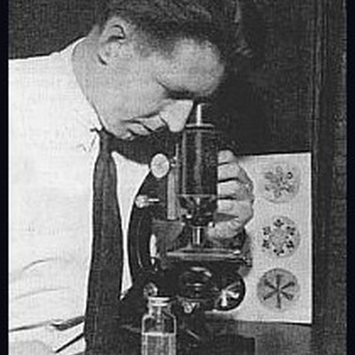
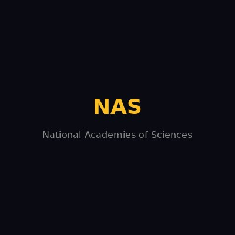
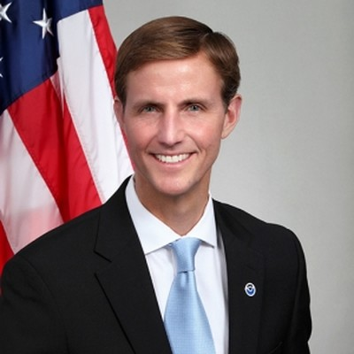

Sky Wars
You’ve scrolled through seven wars — for your technology, your money, your history, your mind, your energy, your information, and your body. This one controls what’s above you. In 1967, the U.S. Air Force weaponized weather in Vietnam. A defense contractor patented spraying aluminum in the stratosphere. A startup began launching sulfur from Nevada. Nobody stopped them. The war for your sky is not a conspiracy theory — it’s public record.
What You Think You Know
The word “chemtrails” is a trap. It was designed to sound ridiculous, and it works — the moment you say it, you’ve lost the room.
Drop the word. Keep the question.
None of that requires the word “chemtrails.”
The Documented Reality
The documented reality is more concerning than the conspiracy theory. Declassified military records. Defense-contractor patents. Congressional testimony. Corporate filings. GAO reports. The evidence is not hidden. It’s just never in the same room at the same time.
Until now.
The History
Weather modification is not theoretical. Governments have been doing it since 1946. Here are the programs they don’t teach in school.
The Programs

Two countries. Four decades. Hurricanes seeded, clouds bombed with dry ice and silver iodide, trials kept classified until journalists and FOIA pried them open. And that was before the Pentagon took it to war.
Operation Popeye (1967–1972)
This is the one that changes everything.
It was classified. For four years, the United States weaponized weather in a war zone and told no one.
Then Jack Anderson — the investigative columnist who would later expose President Richard Nixon’s secret dealings with International Telephone & Telegraph (ITT) and win the 1972 Pulitzer Prize — broke the story in his syndicated column on March 18, 1971. The Pentagon denied it; Seymour Hersh followed with a front-page New York Times investigation in July 1972. By March 1974, Senator Claiborne Pell’s Senate subcommittee forced a closed-door Defense Department briefing — declassified that May — confirming the program on the record.
Classified military operation → journalist exposure → official denial → Congressional investigation → confirmed under oath → international treaty. The same pattern as every other war in this series.
The ENMOD Treaty (1977)
The treaty addressed the war. It left the sky wide open.
And everyone else kept going.
The U.S. weaponized weather in a war zone, got caught, and the world passed a treaty to stop it. The treaty banned the weapon. It didn’t ban the technology. It didn’t even require anyone to tell you they were using it.
The Patents
A defense contractor sat down and designed a system to spray aluminum oxide in the stratosphere. Then they patented it. Then Raytheon bought the company’s defense unit and inherited the patent portfolio.
Patents don’t prove deployment. But they prove intent, capability, and corporate lineage.
The Welsbach Patent (1991)
Was it deployed? No evidence. The patent expired in 2010 without documented test flights or government contracts, and its citation chain consists mostly of later conceptual geoengineering filings rather than operational defense systems. The inventors were infrared (IR) and optics engineers, not atmospheric scientists. This is not the footprint of an active deployment program.
But it exists. A defense contractor patented stratospheric metal-oxide spraying, and Raytheon inherited that portfolio when it acquired Hughes’s defense business in 1997. The patent has since expired into the public domain — and the full filing remains publicly verifiable in USPTO records.
Bernard Eastlund and the HAARP Patent
Bernard J. Eastlund was a physicist working for ARCO — the Atlantic Richfield Company, an oil giant. In 1985, he filed a patent through ARCO’s subsidiary ARCO Power Technologies, Inc. (APTI) for a method of altering the ionosphere using a ground-based antenna array — later linked in public debate to the High-Frequency Active Auroral Research Program (HAARP). The listed applications included disrupting missiles, interfering with communications, and altering upper-atmosphere wind patterns. Eastlund died in 2007. His patent lived on — traveling through a chain of defense contractors before expiring into the public domain in 2005.
The Ownership Chain
Oil company → defense subsidiary → defense contractor → defense giant → defense giant. The patent traveled exclusively through the military-industrial complex until HAARP was transferred to the University of Alaska Fairbanks in August 2015 (following the Air Force’s 2014 closure announcement).
The Landscape
Eastlund and Welsbach aren’t alone. A 2014 academic study identified 143 patent families (910 members worldwide) related to climate engineering. The U.S. government itself holds a 2021 patent for electrostatic cloud seeding (US 11,116,150, Secretary of Agriculture). Eastman Kodak filed a solar-geoengineering patent application in 2022 for dispersing porous polymer particles in the stratosphere (EP 4,301,126, published January 2024). Even NASA patented a 1974 sounding-rocket system for releasing barium ion clouds in the upper atmosphere to trace geomagnetic field lines (US 3,813,875) — a legitimate space-physics instrument frequently misquoted online as weather modification. Likewise, the widely cited August 1996 Air University paper Weather as a Force Multiplier: Owning the Weather in 2025 (Col. Tamzy J. House et al.) was a speculative student-and-faculty future-studies exercise carrying an explicit disclaimer that it did not represent official U.S. Air Force policy.
Getting the Facts Right
The patent landscape is not consistent with a massive covert spraying program. But it is consistent with defense contractors developing atmospheric modification capabilities on paper — capabilities that exist in the same filing cabinets as 6,543 active patent secrecy orders as of FY2025.
Per FAS / USPTO Invention Secrecy Act statistics, active U.S. patent secrecy orders rose from 6,543 at the end of FY2025 to 6,653 at the end of FY2026 (123 new orders imposed, 13 rescinded, including 38 “John Doe” orders on private inventors).
The Deployment
While committees wrote reports, someone was already in the sky.
Make Sunsets
A country banned them. They moved. They launched anyway. They sold credits for something nobody proved works. In April 2025, the EPA began demanding answers under the Clean Air Act — after the fact.
Stardust Solutions
Make Sunsets & EPA: Following its April 2025 Clean Air Act Section 114 information demand under Administrator Lee Zeldin, the EPA launched a public contrails and geoengineering resource portal in July 2025 clarifying that contrails are condensation trails while warning of ozone and precipitation risks from stratospheric aerosol injection. Make Sunsets replied through legal counsel and, as of late 2026, had not been shut down by federal order, continuing periodic launches and credit sales while the EPA continued evaluating its statutory authorities.
Stardust Solutions: Following its late-2025 $60 million funding round (~$75 million total raised) and announced April 2026 outdoor-testing target, Stardust Solutions faced sustained pushback from environmental-law groups (including CIEL) and climate governance scholars throughout 2026; subsequent technical reporting described its candidate materials as engineered amorphous silica or silica-coated calcium carbonate spheres rather than sulfates, while debates over private-sector accountability persisted with no binding international SRM treaty in place.
Nine U.S. States
The Scale
37,000 employees
More than the FBI has special agents.
China’s State Council plans to cover 5.5 million km² with artificial rainfall. The UAE runs ~300 missions per year with AI-powered cloud analysis and nano-material seeding agents. In April 2024, University of Washington marine cloud brightening researchers sprayed sea salt particles from the museum aircraft carrier USS Hornet in Alameda, California — without informing the City of Alameda, whose City Council unanimously voted to halt and permanently block the experiment in June 2024.
The Irony
Harvard couldn’t launch a test balloon with calcium carbonate. A startup launched 147 sulfur balloons with nobody’s permission. That is the governance gap in a single sentence.
The Trap
Oxford physicist Raymond Pierrehumbert called climate hacking “barking mad.” Peer-reviewed models and IPCC AR6 confirm why: once you mask warming at scale, stopping triggers rapid termination shock faster than ecosystems or societies can adapt.
The Vacuum
Everyone who matters knows. Nobody who governs has acted.
The Governance Gap
Hostile use banned → UN Convention on Biological Diversity (CBD) 2010 de facto moratorium (Decision X/33) without the U.S. → email-based reporting with no approval needed → no framework for stratospheric aerosol injection → startups deploy with nobody’s permission.
The Intelligence Angle
The Researchers
The scientific community is deeply split. Keith advocates for research. Robock publishes reasons to stop. Christine Shearer, Mick West, Ken Caldeira, and Steven J. Davis surveyed 77 experts and found 76 saw no evidence of covert spraying. 500+ academics from 61 countries signed a Non-Use Agreement in 2022. The people who study this most closely are the ones begging for governance.
The Institutional Cascade

The Backlash
State Bans & H.R. 4403: By late 2026, three U.S. states had enacted statutory restrictions — Tennessee (effective July 2024), Florida (SB 56, effective July 1, 2025, with third-degree felony penalties up to 5 years / $100,000 plus mandatory public-airport reporting), and Louisiana (Act 95, 2025, establishing DEQ tracking and reporting) — while dozens of additional state bills were debated, stalled, or vetoed (including bills in Arizona and Montana). Federally, H.R. 4403 remained in committee and had not been enacted.
Publicly Funded Outdoor SRM Scoping (UK ARIA) & Non-Use Agreement: Outside the United States, the UK’s Advanced Research and Invention Agency (ARIA) advanced its £56.8 million Exploring Climate Cooling programme across 22 multidisciplinary projects — including preliminary UK site scoping and community consultations for tightly bounded, reversible, small-scale outdoor equipment tests. Meanwhile, signatories to the International Non-Use Agreement on Solar Geoengineering surpassed 650+ academics across more than 60 countries.
The Admiral’s Testimony

The former head of the agency responsible for atmospheric science says: geoengineering research is real. The Air Force studied weather weapons. But he doubts the U.S. has operationally deployed. Either he genuinely wasn’t read in — or large-scale covert programs don’t exist at the scale claimed. Either way, his testimony confirms the pipeline while casting doubt on deployment.
This is how disclosure works: the architecture is confirmed. The operation is denied. The governance gap remains.
The Sky Is Open
The wall between “documented” and “conspiracy” is thinner than you think. This scroll stands on the documented side. Here’s the ledger.
The Scientific Consensus
A cautionary note on Dane Wigington and Kristen Meghan Edwards: Dane Wigington (GeoengineeringWatch.org) is the most prominent chemtrail advocate online; Media Bias/Fact Check rates the site as CONSPIRACY-PSEUDOSCIENCE with LOW factual reporting, and his claims go far beyond what documented evidence supports. Similarly, former U.S. Air Force Bioenvironmental Engineering Technician Kristen Meghan Edwards (enlisted AFSC 4B0X1, separated as Staff Sergeant) cites her verified military service to allege covert geoengineering materials in classified hangars; however, routine base industrial-hygiene duties involve tracking standard aerospace maintenance chemicals, and her hangar allegations remain uncorroborated by chain-of-custody logs or independent records. Citing uncorroborated claims in a conversation with a skeptic will lose the argument. Stick to the documents. The documents are damning enough.
The Ledger
Established (Documented):
Not Established:
Across the Scrolls
Every program in this investigation was documented by the governments that ran them. Every patent was filed by the companies that designed them. Every hearing was held by the Congress that didn’t act. Every balloon was launched by the startups nobody stopped.
The question was never whether someone could modify the atmosphere without telling you. They’ve been doing it since 1946.
The question is what comes next — and whether anyone will ask your permission first.
Look up.
Eight wars. One sky. Every scroll in this series is documented, sourced, and verifiable. The reason most people haven’t heard about them isn’t that the evidence is hidden — it’s that the word designed to discredit the conversation worked.
Until someone reads the documents instead.